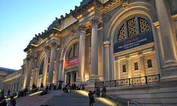

MUSEU METROPOLITANO DE ARTE | NOVA YORK, EUA
Sobre
O Metropolitan Museum of Art (em português: Museu Metropolitano de Arte), conhecido informalmente como The Met, é um museu de arte localizado na cidade de Nova Iorque, Estados Unidos, sendo um dos mais visitados museus do planeta.
Fundado em 13 de abril de 1870,[5] foi aberto ao público em 20 de fevereiro de 1872.[6] É um dos maiores e mais importantes museus do mundo e abriga uma importante coleção de pintura europeia dos séculos XII-XX e obras da arte antiga (grega, romana, egípcia e assírio-babilónica) e oriental. Estão também expostas nas suas salas pinturas e esculturas de artistas norte-americanos. São muito importantes as secções dedicadas a instrumentos musicais, armas e indumentária.
O museu foi designado, em 24 de junho de 1986, um edifício do Registro Nacional de Lugares Históricos[1][2] bem como, na mesma data, um Marco Histórico Nacional.
Coleções
O acervo do Metropolitan Museum of Art é curado por dezessete departamentos distintos, sendo cada um deles encabeçado por uma equipe especializada de curadores e estudiosos, assim como seis deles dedicados à conservação e um dedicado exclusivamente à pesquisa científica. A coleção permanente inclui obras de arte da Antiguidade clássica e do Antigo Egito, pinturas e esculturas de mestres europeus e uma ampla coleção de arte moderna americana. O museu mantém ainda galerias com ênfase em arte africana, asiática, oceânica, bizantina e islâmica. O museu abriga também coleções enciclopédicas de instrumentos musicais, vestimentas e acessórios antigos, além de armamentos clássicos de todas as partes do mundo. Um número de interiores, desde o primeiro século ocidental até a América contemporânea são exibidos permanentemente nas galerias do maior museu nova-iorquino.
Oriente Proximo
O museu passou a colecionar artefatos do Oriente Próximo a partir do século XIX. Iniciando com algumas peças cuneiformes e selos antigos, a coleção foi expandida para mais de 7 mil peças em exibição.[8] Toda a exposição do museu engloba a história da região, tendo início com o período Neolítico, passando pelo Império Sassânida e concluindo na Antiguidade tardia. A coleção engloba as culturas: suméria, hitita, sassânida, assíria, babilônia e elamitas, entre outras, além de uma extensa coleção de artigos da Era do Bronze. Um dos destaques deste setor do museu é uma escultura monumental de um Lamassu, proveniente do palácio de Assurnasirpal II.
Armamentos e armaduras
O Departamento de Armas e Armaduras é um dos mais populares do museu, tendo como um dos cartões de visita o grande desfile de armaduras no primeiro pavimento do prédio desde 1975. O departamento foi organizado com o apoio do estudante e colecionador russo Leonid Tarassuk (1925 - 1990) a partir da década de 1970. A coleção do Metropolitan Museum of Art é a maior do mundo em termos de arte medieval e japonesa do século V ao XIX, mais precisamente. Contudo, a coleção do museu também engloba outras regiões geográficas, incluindo armamentos selecionados do Antigo Egito, Grécia Antiga e do Império Romano, além de peças oriundas de civilizações africanas e americanas. Em meio às 14 mil peças da coleção, muitas foram utilizadas por monarcas destacados, como as armaduras pertencentes a Henrique VIII de Inglaterra, Henrique II de França e Fernando I.[